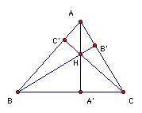

ABC is a triangle with circumradius R and inradius r. If p is the inradius of the orthic triangle, show that p/R ≤ 1 - (1/3) (1 + r/R)2). [The orthic triangle has as vertices the feet of the altitudes of ABC.]
Solution

∠HA'B = ∠HC'C = 90o, so HA'BC' is cyclic. Hence ∠HA'C' = ∠HBC' = 90o - ∠A. Similarly, ∠HA'B' = 90o - ∠A, so H is the incenter of the orthic triangle.
HA' = A'B tan HBA' = A'B cot C = c cos B cot C. Hence p = HA' sin HA'C' = HA' cos A = c cos A cos B cos C/sin C. If O is the circumcenter, then ∠AOB = 2 ∠C, so c/2R = sin C. Hence p = 2R cos A cos B cos C.
We have 4 cos A cos B cos C = 2 (cos(A+B) + cos(A-B)) cos C = cos(A+B+C) + cos(A+B-C) + cos(A-B+C) + cos(A-B-C) = cos 180o + cos(180o-2C) + cos(180o-2B) + cos(2A-180o) = -1 - cos 2C - cos 2B - cos 2A = 2 - 2(cos2A + cos2B + cos2C). Hence p/R = 1 - (cos2A + cos2B + cos2C).
Now by Cauchy we have (12+12+12)(cos2A + cos2B + cos2C) ≥ (cos A + cos B + cos C)2, so p/R ≤ 1 - (cos A + cos B + cos C)2/3.
Finally, we need the result that cos A + cos B + cos C = 1 + r/R. We have cos A = (b2+c2-a2)/2bc, cos B = (a2+c2-b2)/2ac, cos C = (a2+b2-c2)/2ab, so cos A + cos B + cos C = (ab2 + a2b + b2c + bc2 + c2a + ca2 - a3 - b3 - c3)/2abc = (8(s-a)(s-b)(s-c) + 2abc)/2abc = 4(area ABC)2/(abcs) + 1 (using Heron). But we also have area ABC = ½ab sin C = abc/4R, and area ABC = rs. So 4(area ABC)2/(abcs) = r/R, giving cos A + cos B + cos C = 1 + r/R, as required.

© John Scholes
jscholes@kalva.demon.co.uk
8 Nov 2003
Last corrected/updated 8 Nov 03